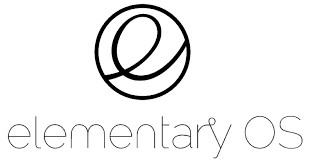
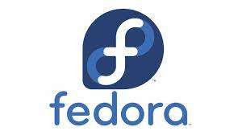
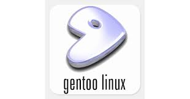

- Software de sistema
- Software de aplicação
- Software de programação
- Software de segurança
- Software de bases de dados
- Software de redes
- Software educacional
- Software de entretenimento
- Software de gestão empresarial
- Software de design
assistido por computador(CAD)
o que é um software?
Software é todo programa rodado em computadores, celulares ou outros dispositivos que permite a execução de suas funções; entenda
Por Ronaldo Gogoni
3 anos e meio atrás
• Atualizado há 2 meses
As melhores ofertas, sem rabo preso
Achados do TB no WhatsApp
WhatsApp
Achados do TB no Telegram
Telegram
Com três categorias principais, o software corresponde a todo programa rodado em um computador, celular ou dispositivo que permite ao mesmo executar suas funções. Continue a leitura para entender, em detalhes, o que é software, todo o conceito que envolve o termo e onde pode ser encontrado.
Software é um conjunto de instruções que devem ser seguidas e executadas por um mecanismo, seja ele um computador ou um aparato eletromecânico. É o termo usado para descrever programas, apps, scripts, macros e instruções de código embarcado diretamente (firmware), de modo a ditar o que uma máquina deve fazer.
O que é software? (Imagem: Vitor Pádua / Tecnoblog)
Software é um conjunto de instruções que devem ser seguidas e executadas por um mecanismo, seja ele um computador ou um aparato eletromecânico. É o termo usado para descrever programas, apps, scripts, macros e instruções de código embarcado diretamente (firmware), de modo a ditar o que uma máquina deve fazer.
Todo programa em seu computador, celular, tablet, smart TV, console de videogame, set-top box e etc. é um software, seja ele um editor de textos, um navegador, um editor de áudio ou vídeo, um jogo, um app de streaming e por aí vai.
Um software pode se apresentar de várias formas, por isso se dividem em três categorias principais:
1. Software de programação
São as ferramentas usadas pelo programador para desenvolver novos softwares e programas. Usam diferentes linguagens de programação (C, Java, Python, Swift, etc.) e abrigam compiladores, intérpretes e depuradores, por exemplo.
Os editores de texto, embora sejam softwares de aplicação, também são softwares de programação, pois podem ser usados para escrever código.
2. Software de sistema
São os programas encarregados de fazer a comunicação entre o computador, que só entende linguagem de máquina, e o usuário, sendo a base em que outros softwares, como os de aplicação e os de programação irão rodar. Ou seja, são plataformas para fazer funcionar outros softwares.
Os sistemas operacionais como Windows, macOS, Linux, iOS, Android, por exemplo, são softwares de sistema. Em alguns casos, softwares de aplicação podem assumir o papel de sistemas operacionais, como o Chrome OS, onde o navegador é um software de sistema e de aplicação.
Firmwares, softwares de automação industrial e motores gráficos de jogos também são exemplos de softwares de sistema.
Robô mascote do Android
Android é um exemplo de software de sistema. (Imagem: Vitor Pádua / Tecnoblog)
3. Software de aplicação
Os softwares de aplicação, por sua vez, são os programas que você conhece: players de vídeo e música, jogos, editores de textos, calculadoras, navegadores, apps de redes sociais e etc.
Um software de aplicação tem como função executar tarefas das mais diversas, que podem ser de uso individual ou até mesmo global, o que pede que eles sejam mais robustos e seguros.

Software de sistema
sistema incluem sistemas operacionais como macOS, Ubuntu (uma distribuição Linux) e Microsoft Windows, software de computação científica, mecanismos de jogos, automação industrial e aplicativos de software como serviço.
Windows, macOS, Linux, iOS, Android,

Software de aplicação
Os softwares de aplicação, por sua vez, são os programas que você conhece: players de vídeo e música, jogos, editores de textos, calculadoras, navegadores, apps ..
players de vídeo e música, jogos, editores de textos, calculadoras, navegadores, apps ...

Software de programação
Software de programação ... São as ferramentas usadas pelo programador para desenvolver novos softwares e programas. Usam diferentes linguagens de programação .
OFTWARE DE PROGRAMAÇÃO: são softwares usados para criar outros programas, a parir de uma linguagem de programação, como Java, PHP, Pascal, C+, C++, entre outras.

Software de segurança
Trata-se de uma classe de sistemas que age na identificação, na prevenção e no bloqueio de possíveis invasões, a partir dos códigos maliciosos
Antiphishing: para bloquear sites perigosos contra roubo de dados.
Antispyware: para proteger seus dados privados contra vazamento na Web.
Antirransomware: para impedir que o ransomware bloqueie seu dispositivo.
Firewall: para monitorar e bloquear tráfego de rede indesejado e suspeito.
Gerenciador de senhas: para criar e armazenar senhas fortes.
VPN (Rede Privada Virtual): para navegar na Web de forma anônima.
Controle dos pais: para restringir o acesso de seus filhos a conteúdo impróprio.

Software de bases de dados
O software de banco de dados simplifica o gerenciamento de dados, permitindo que os usuários armazenem dados em um formulário estruturado e depois os acessem.
Os 6 melhores softwares para gestão de banco de dados
-Microsoft SQL Server.
-Oracle RDBMS.
-DB2.
-Microsoft Access.
-PostgreSQL.
-MongoDB.

Software de redes
Software de rede é um termo extremamente amplo para uma gama de softwares voltados ao design e implementação de redes modernas.
Gerencie sua rede em um nível superior com o PRTG: Monitoramentos, análises, diagnósticos. O PRTG o notifica antes que surjam erros. Software tudo em um. Economize tempo e energia.

Software educacional
Software educacional é um programa ou aplicativo que fornece ferramentas a professores e / ou alunos para facilitar o aprendizado.
Software educativo de sistema tutorial; Software educativo de exercício e prática; Software educativo de simuladores e jogos e Software educativo de sistema experto.

Software de entretenimento
Software de entretenimento é qualquer software que apóie um hobby ou forneça uma forma de diversão.
-The Sims;
-Candy Crush;
-League of Legends.

Software de gestão empresarial
Um software de gestão empresarial é um sistema informatizado composto de diversos módulos relacionados aos processos operacionais, administrativos e gerenciais de uma organização, que integra de forma inteligente e centralizada os dados referentes a todas as operações diárias de uma empresa.
Conta Azul. O software de gestão financeira Conta Azul é bem completo e fácil de usar. ...
Nibo. Outra opção de software de gestão financeira é o Nibo. ...
Asaas. ...
Agendor. ...
Pipedrive. ...
Trello. ...
Tiny. ...
QuickBooks.

Software de design
assistido por computador(CAD)
CAD (Computer Aided Design) ou em português, Desenho Assistido por Computador é o termo utilizado ao se referir a softwares que auxiliam na elaboração de desenhos/projetos no meio digital, através de gráficos produzidos em computadores.
As melhores opções de software CAD incluem AutoCAD, SolidWorks, SketchUp, Revit e Fusion 360.

o que é o Windows?
Windows é um sistema operacional de multitarefas para computadores e dispositivos móveis desenvolvido pela Microsoft. A palavra Windows significa literalmente “janelas”, na tradução do inglês para o português.
Considerado um dos sistemas operacionais mais utilizados em todo o mundo, o Windows começou a ser projetado em 1981, mas foi apenas em 1993 que sua primeira versão foi lançada.

- Windows 1.0. O início de tudo.
- Windows 2.0 e 2.1. Posteriormente, houve o lançamento do Windows 2 em dezembro de 1987.
- Windows 3.0 e Windows NT.
- Windows 95 e a Internet.
- Windows 98, Windows ME e Windows 2000.
- Windows XP.
- Windows Vista.
- Windows 7.
- Windows 8.
- Windows 10.
- Windos 11.
Windows 1.0.
Windows 1.0 foi uma interface gráfica de usuário (GUI) entre o sistema operacional Microsoft DOS e o computador, é a primeiro versão da família Windows.

Windows 2.0 e 2.1.
Windows 2.0 foi uma interface gráfica de usuário (GUI) entre o sistema operacional Microsoft DOS e o computador, é a segunda versão da família Windows desenvolvido pela empresa norte-americana Microsoft lançado em 9 de dezembro de 1987, sucessor da versao Windows 1.x. Inicialmente, este não era um sistema operacional próprio, era apenas uma interface no modo gráfico que com o auxílio do dispositivo mouse facilitava o uso do computador com sistema MS-DOS, com funcionalidades relativamente limitadas. A primeira tentativa de criar um sistema multitarefa. Foi desenvolvido até versão 2.11. Sendo sucedido pelo Windows 3.x, lançado em 1990.

Windows 3.0 e Windows NT.
A 22 de maio de 1990, a Microsoft anuncia o Windows 3.0, seguido pouco depois pelo Windows 3.1, em 1992. Em conjunto, as duas edições vendem 10 milhões de cópias durante os dois primeiros anos, tornando-o no sistema operativo Windows mais utilizado de sempre. A escala deste êxito faz com que a Microsoft reavalie os seus planos iniciais. A Memória Virtual melhora os gráficos visuais. Em 1990, o Windows começa a assemelhar-se às suas versões posteriores.

Windows 95 e a Internet.
Apesar do Windows 3.1.1 ter contado antes funcionalidade de internet, o Windows 95 facilitou profundamente o processo de conexão. Até então era preciso manipular um arquivo DLL manualmente para ativar a função, algo que a nova versão deixava de lado graças ao suporte nativo para conexões discadas.

Windows 98, Windows ME e Windows 2000.
O Windows Millennium Edition (ou Windows ME) é uma versão do Windows reconhecida como um dos maiores fracassos da Microsoft. O sistema foi lançado há 20 anos, em 14 setembro de 2000, e é famoso pelas telas azuis e por travar com uma simples mexida no mouse. Considerado lento e problemático, o Windows ME teve tantos problemas que durou menos de um ano no mercado. Em agosto de 2001, ele já havia sido substituído pelo Windows XP, que corrigiu grande parte dos falhas da edição anterior.

Windows XP.
O Windows XP é um sistema operacional da Microsoft para computadores, desktop, notebooks, tablets e media centers. Lançado em 2001, o sistema foi muito bem recebido pelos usuários e continua sendo muito utilizado, mesmo após o encerramento do suporte em abril de 2014.

Windows Vista.
O Windows Vista é uma versão do sistema operacional da Microsoft, lançada em 2007, que se destina a computadores pessoais, laptops, tablets e empresariais. Entre os recursos apresentados, destaca-se a reformulação da interface gráfica, mudando drasticamente o padrão das versões anteriores.

Windows 7.
O Windows 7 chegou ao mercado em outubro de 2009 e tornou-se um dos sistemas operacionais de maior sucesso. Atualmente, porém, não é mais possível fazer o download do Windows 7, pois não há mais suporte para o sistema. Fim do suporte ao Windows 7: veja sete perguntas e respostas.

Windows 8.
Windows 8 é uma versão do Microsoft Windows, uma série de sistemas operacionais desenvolvidos pela Microsoft para computadores pessoais, laptops e tablets.[4] É o sucessor do Windows 7. Foi anunciado oficialmente por Steve Ballmer, diretor executivo da Microsoft, durante a conferência de pré-lançamento do sistema operacional. O Windows 8 Developer Preview, primeira versão beta do sistema, foi lançado no dia 13 de setembro de 2011 e depois foi seguida pela versão Consumer Preview no dia 29 de fevereiro de 2012.

Windows 10.
O Windows 10 é uma versão do sistema operacional da Microsoft disponível para download em PC e em notebook. O W10 trouxe uma série de mudanças relevantes na forma como o SO é produzido, distribuído e mantido pela desenvolvedora norte-americana.
Há duas versões do Windows 10: Pro ou Home – veja as diferenças e saiba qual versão comprar.

Windows 11.
Windows 11 é a versão mais recente do sistema operacional da Microsoft para computadores. Lançado em 5 de outubro de 2021, o sucessor do Windows 10 vem com visual mais limpo e minimalista, incluindo ícones remodelados, janelas translúcidas, nova iconografia e um Menu Iniciar centralizado. O software traz também avanços em produtividade, com destaque para os novos layout snaps – um modo especial para gerenciar janelas –, integração com Microsoft Teams e suporte aprimorado a desktops virtuais.

Linux
O Linux é um sistema operacional open source e gratuito, disponibilizado sob a Licença Pública Geral (GPL) GNU. Qualquer pessoa pode executar, estudar, modificar e redistribuir o código-fonte, ou até mesmo vender cópias do código modificado, desde que faça isso sob a mesma licença.
- Android.
- Arch Linux.
- CentOS.
- Debian.
- Elementary OS
- Fedora Linux.
- Gentoo Linux.
- Kali Linux.
- Manjaro Linux
- Linux Debian
- Puppy Linux
- Linux OpenSUSE
- Linux Lite
- MX Linux
- Linux CentOS
- Arch Linux
- Linux Zorin OS
- Linux Slackware
- Oracle Linux
- Elementary OS
- Linux Fedora
- Tails Linux
- Linux Raspbian
- Linux Pop!_OS

Android
Android é o nome do sistema operacional baseado em Linux que opera em celulares (smartphones), netbooks e tablets. É desenvolvido pela Open Handset Alliance, uma aliança entre várias empresas, dentre elas a Google.

Arch Linux
O Arch Linux é conhecido por sua rapidez, estabilidade e segurança, além de ser altamente personalizável. O Manjaro Linux é uma distribuição baseada no Arch Linux, mas com um foco maior na facilidade de uso, sendo uma boa opção para usuários que buscam uma distribuição rápida e estável

CentOS
CentOS é uma distribuição de código aberto do Linux. Muitos se referem a ele como uma réplica do Red Hat Enterprise Linux (RHEL), que é considerado uma das tecnologias corporativas de TI mais usadas no mundo. O CentOS é um sistema operacional de classe empresarial amplamente suportado pela comunidade.

Debian
Debian é uma distribuição que utiliza o Kernel Linux ou Hurd em conjunto com outros aplicativos para oferecer um sistema operacional completo e universal.

Elementary OS
O elementary OS ajuda você a manter o controle sobre o que os aplicativos estão fazendo. Quando um aplicativo usa seu microfone, exibimos um indicador para informá-lo. Quando um aplicativo está usando muita energia, informamos no seu indicador de energia.

Fedora OS
Fedora é um sistema operacional Linux baseado na distribuição Red Hat e que utiliza o ambiente GNOME como desktop padrão.

Gentoo linux
O Gentoo é o que podemos chamar de distribuição Linux “Source Based”, isto é, a ideia é que você baixe o código fonte das aplicações e compile elas no próprio sistema para utilizar. Não somente as aplicações, mas o sistema como um todo pode trabalhar desta forma

Kali Linux
Kali Linux é uma das distribuições Linux GNU, baseada em Debian, que conta com mais de 300 ferramentas de teste, status de segurança e pentest. Esse é um sistema que muitos hackers éticos utilizam para testar os sistemas de seus clientes, a fim de identificar gaps e traçar melhorias estratégicas para aplicar.

Manjaro Linux
Manjaro Linux é um sistema operacional rápido, amigável e voltado para desktop baseado no Arch Linux.O Manjaro Linux oferece o XFCE como as principais opções de desktop, bem como KDE, GNOME e uma edição minimalista da Net para pessoas usuárias mais avançadas. Faça o download do Manjaro agora mesmo.

Linux Debian
Debian é a distribuição mais antiga e mais popular do Linux. Como qualquer outro distro de peso, fornece uma ambientação muito agradável e rápida. Atualmente, sua última versão é a 11, que também é chamada de Bullseye.

Puppy Linux
Puppy Linux é mais uma distribuição Linux. A diferença aqui é que o Puppy é extraordinariamente pequeno, mas cheio de recursos. O Puppy inicializa em um ramdisk e, ao contrário das distribuições de live CD que tem que extrair coisas do CD, ele carrega na RAM. Isso significa que todos os aplicativos começam em um piscar de olhos e respondem à entrada instantaneamente.

Linux OpenSUSE
O OpenSUSE é mais uma das distribuições Linux que tem como objetivo fornecer uma interface moderna e rápida para pessoas usuárias de desktop e desenvolvedoras de todo mundo.

Linux Lite
Linux Lite é uma distribuição Linux amigável para iniciantes baseada no lançamento de suporte de longo prazo (LTS) do Ubuntu e utilizando o desktop XFCE.

MX Linux
MX Linux é uma distribuição Linux feita para desktop baseada na branch “Stable” do Debian e é um empreendimento cooperativo entre o antiX e as antigas comunidades MEPIS Linux.

Linux CentOS
O Linux CentOS é mais um sistema operacional gratuito que tem como objetivo criar um ecossistema de código aberto confiável. Ele é baseado no RHEL, e é uma das alternativas do Red Hat Enterprise Linux por ser gratuito.

Linux Ubuntu
Desenvolvido por uma empresa chamada Canonical, o Ubuntu é baseado em um dos muitos derivados do Linux Debian. Esse software chegou ao mercado em 2004. As pessoas programadoras na época perceberam os destaques do sistema e sua facilidade na programação. A interface de linha de comando permitia que fosse usada uma sintaxe mínima para escrever programas. O Ubuntu tem três versões, todas desenvolvidas para diferentes propósitos.

Linux Zorin OS
Zorin OS é uma distribuição Linux baseada no Ubuntu projetada especialmente para iniciantes no Linux. Possui uma interface gráfica de usuário semelhante ao Windows e muitos programas semelhantes aos encontrados no Windows.

Linux Slackware
O lançamento oficial do Slackware Linux foi feito por Patrick Volkerding e é um sistema operacional Linux avançado. Foi projetado com o objetivo de ser um sistema fácil de usar e é principalmente estável.

Oracle Linux
O Oracle Linux é uma distribuição Linux para a classe empresarial e é suportada pela Oracle que a constrói a partir dos pacotes do Red Hat Enterprise Linux (RHEL).

Elementary OS
Elementary OS é uma distribuição de desktop baseada no Ubuntu.Alguns de seus recursos mais interessantes incluem um ambiente de área de trabalho personalizado chamado Pantheon e muitos aplicativos personalizados, incluindo fotos, músicas, vídeos, calendário, terminal, arquivos e muito mais.

Linux Fedora
Fedora dentre as distribuições linux é a que mais se destaca por ser realmente simples e prover uma grande quantidade de aplicativos previamente instalados. Isso a torna uma distribuição muito amigável e que facilita a entrada de novas pessoas usuárias.
É flexível e poderoso, baseado no Red Hat, também é utilizado como ambiente de teste da transição do Red Hat. Foi feito tanto para sistemas de desktop, servidores e ecossistemas IoT. É utilizado principalmente para fins de desenvolvimento e muito útil para pessoas desenvolvedoras e estudantes.

Tails Linux
The Amnesic Incognito Live System (Tails) é uma distro baseada em Debian com o objetivo de fornecer anonimato completo na Internet.

Linux Raspbian
Raspberry Pi OS (anteriormente Raspbian) é um sistema operacional gratuito baseado no Debian e otimizado para o hardware do Raspberry Pi (a arquitetura do processador ARMHF).

Linux Pop!_OS
Pop! _OS é uma distribuição Linux baseada no Ubuntu que utiliza o GNOME como sua área de trabalho personalizada.Pop! _OS é projetado para não ter nenhum item na área de trabalho, a fim de permitir que a pessoa usuária se concentre no trabalho. A distribuição é desenvolvida pelo varejista de computadores Linux System76.